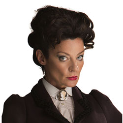

| Home | The Doctors | The Companions | The Villains |
|
|||
The Master
A childhood friend of the Doctor, the Master was driven insane after looking into the Untempered Schism on Gallifrey at the age of eight. Like the Doctor, he fled from the Time Lord’s home planet in a stolen TARDIS. However the Master’s motives have never been pure - frequently seeking alliances with aliens like the Daleks, the Nestene Consciousness and the Rani in an effort to conquer the galaxy. Running out of natural regenerations, he began assimilating other bodies, before eventually dying. Resurrected by the Time Lords him as the perfect warrior, he fought in the Time War before hiding – first as Professor Yana then as Harry Saxon. Shot by his wife but being once more reborn, he was last seen forcing Rassilon and the Time Lords back into the hell of Time War-ravaged Gallifrey. |